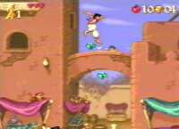

|


Review
Game Type: 2D Platform
The usual run-n-jump-on-the-enemies'-heads game.
Gameplay: 90/100
From the description above I probably already have people yawning. But
while it comes from an overdone genre, Aladdin deserves a look, mostly
because of the awesome acrobatic attacks in Al's arsenal. (Say that 3 times
fast...) Al can handspring off of enemies, posts, and various other items
strewn about, swing from stalactites and anything else hanging around
(sometimes kicking an enemy in the process), and grab ledges to save himself
from falling. Though not as cool as the aforementioned moves he can also
chuck apples to stun enemies, dash, and glide using a cloth parachute
(here's a kid who really knows where his towel is). Once you get the hang
of the moves you'll hardly ever touch the ground, springing, leaping, and
gliding from place to place.
Graphics: 85/100
Not nearly as good looking as its Genesis counterpart, since Disney
themselves did the animations for the Genny version, but the SNES version is
hardly an eyesore. The graphics are very colorful and the characters are
well animated. No really fancy graphic effects (except at the fight with
Jafar).
Sound: 80/100
As might be expected the music is taken from the movie soundtrack, which
I like well enough, but it doesn't make compelling music for a game. Sound
effects are pretty high quality but not wildly impressive.
Overall: 90/100
Simplistic, but still one of the better platform games available for
the SNES. Though it's not nearly as funny I'll play this over Earthworm Jim
any day.
Game Genie Codes
| F064-1DD0 | Start with 20 lives |
| C221-4FA5 | Infinite lives |
| DCB8-3F07 | Start with 9 continues |
| C283-37DD | Infinite continues |
| D564-14A0 | Start with 7 health |
| C267-4D0A | Almost invincible |
| FB80-44AE | Emeralds worth 3 |
| C281-4F0E | Rubies worth 2 |
| FD86-4F6E | Only 10 gems needed for health increase/free life |
| 4D67-1F60 | Start with 20 apples |
| 3CA9-C4A5 | Infinite apples |
| BD8B-4DD3 | Apple power-ups worth 90 |
DDB5-3467 +
DDBA-3FA7 | Level select on main menu--use R + Up/Down to change level, R + Left/Right to change sub-level |
| DDA7-4DD5 | Bonus round played after every level |
| C267-476A | Aladdin is totally intangible after 1st hit; includes spikes |
|